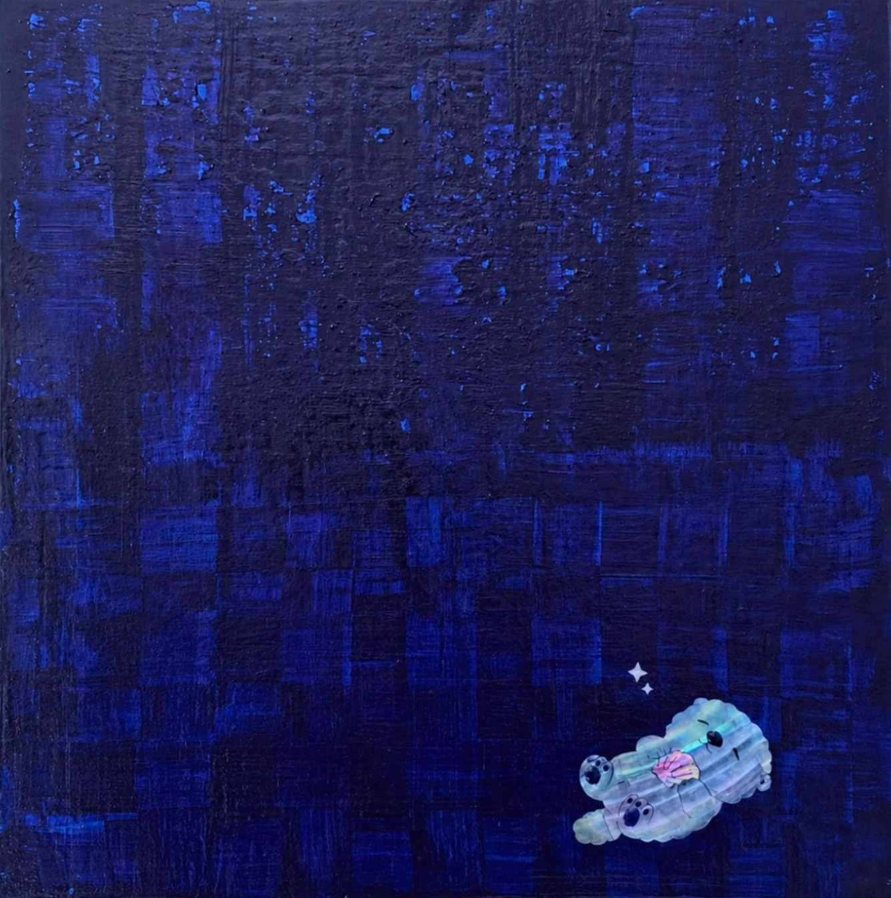

헌법 제10조 행복추구권*Article 10 of the Constitution: The Right to Pursue Happiness*
Article 10 of the Constitution: The Right to Pursue Happiness*헌법 제10조 행복추구권*
목심나전칠기(천연자개, 옻칠, 변칠기법) · 31.8 × 31.8 cm · 2026Traditional Korean najeonchilgi on a wood core (natural mother-of-pearl, lacquer, decorative lacquer technique [byeonchil]) · 31.8 × 31.8 cm · 2026
여러 겹의 옻칠을 쌓고 긁어내는 변칠 기법으로 완성한 군청 체크는, 작가에게 가장 큰 안도감과 기쁨을 주는 지극히 사적인 취향이자 우리를 둘러싼 사회의 규범과 제도를 닮은 구조다. 그 광활한 체크 한 귀퉁이에, 자개로 빚은 얼빵해달이 조용히 잠들어 있다. 측면까지 이어진 자개 별들은 그 작은 존재가 머무는 세계가 캔버스 너머까지 뻗어 있음을 말한다. 법학 논문 대신 옻칠로 쓴 이 작품은, 헌법 제10조의 가장 개인적인 해석이다. *헌법 제10조 행복추구권은 타인의 권리를 침해하지 않는 범위 내에서 자신의 개성을 자유롭게 발현하고 스스로 삶의 방식을 결정할 수 있는 권리를 의미합니다.Layer upon layer of lacquer, built up and scraped back through the byeonchil technique, forms this navy check — a deeply personal comfort and joy for the artist, and, at the same time, a structure that resembles the social norms and institutions surrounding us. In one corner of that vast check pattern, a Spaced-out Sea Otter shaped from mother-of-pearl sleeps quietly. The mother-of-pearl stars that continue onto the sides of the piece suggest that this small being's world extends beyond the edge of the canvas. Written in lacquer instead of a law review article, this work is the artist's most personal reading of Article 10 of the Constitution — the right to pursue happiness.* *Article 10 of the Constitution protects the right to freely develop one's individuality and determine one's own way of life, so long as it does not infringe on the rights of others.
전시 이력Exhibitions
- 2026.04.29 – 2026.05.03 요코하마 국제아트페스티벌, 요코하마 시민갤러리, 요코하마, 일본2026.04.29 – 2026.05.03 Yokohama International Art Festival 2026, Yokohama Citizen Gallery, Yokohama, JPN
- 2026.03.20 – 2026.03.22 언노운바이브 더블룸, 신라호텔, 서울, 대한민국2026.03.20 – 2026.03.22 Unknown vibe the bloom, Shilla Hotel, Seoul